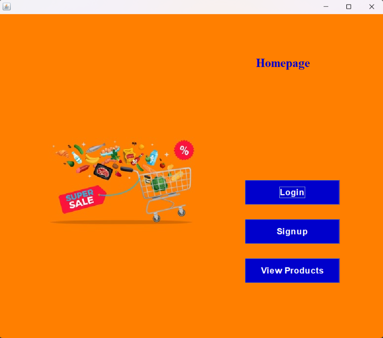
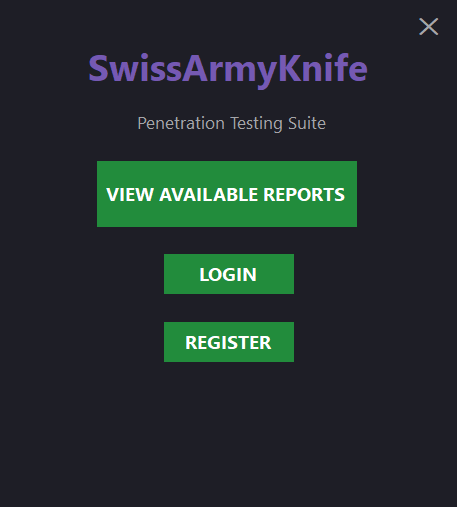

Market Management System
- Java (Swing for GUI)
- Oracle Database (JDBC)
- File-based data storage
- MVC design pattern

Swiss Army Knife
A web application penetration testing tool management system
- Language: C# 12.0
- Framework: .NET 8 (Windows Forms)
- UI: WinForms with custom dark theme
- Async/Await: Task-based async operations
- Networking: TcpClient, HttpClient, SslStream
- Security: RFC 4253 SSH protocol parsing, X.509 certificate inspection
- Threading: SemaphoreSlim for parallelization

Local Port Scanner
It CLI based tool that scans local ports